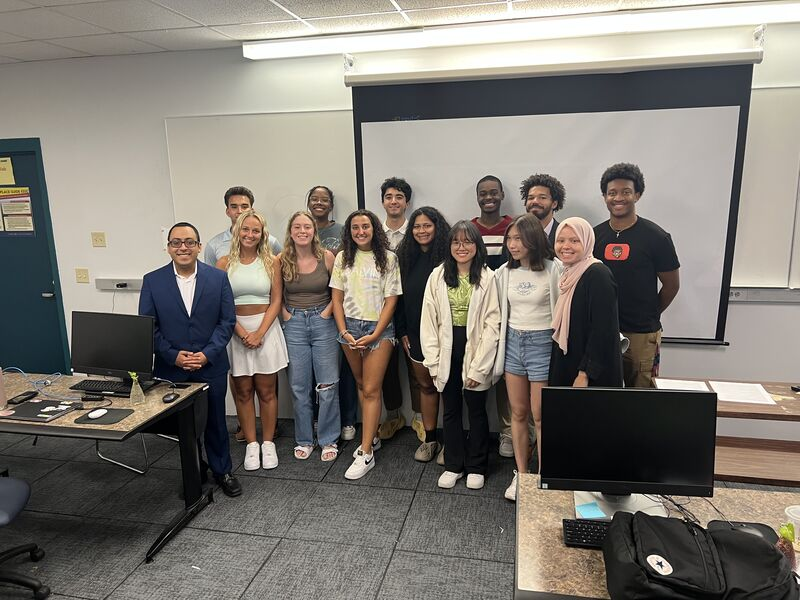

Biostatistics @ SIBDS

I spent the summer of 2022 at the National Institute of Health (NIH) Summer Institute for Biostatistics & Data Science.
Worked on a variety of projects relating to the intersection of machine learning and statistics with health care and biology, including:
- Developed machine learning model to predict location of DNA transcription factors given a sequence
- Presented on efficacy of prediction models (decision trees, linear regression) for disease given clinical trial data
References: Dr. Katherine Freedman, Dr. Lun-Ching Chang
Technologies: